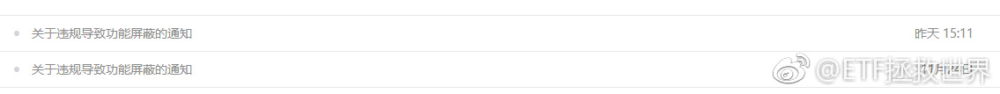

长短结合逆回购搞起来！

ETF拯救世界
2017-12-26
ETF拯救世界
2017-12-26
回复@Yoran_咩咩咩:真的有些品种可能这样，所以炒个股要小心//@Yoran_咩咩咩:咋不能图片评论，现在别的财经博主评论下面都是a股必然港股化僵尸化，还有说必须要认清a股未来丧失流动性的先决战略再去选股。吓得我还是来e大这按摩心灵吧 //@ETF拯救世界:回复@josephtang:送你个大保健得唔得嘅？
//@ETF拯救世界:回复@josephtang:送你个大保健得唔得嘅？
@ETF拯救世界:
为什么要定时交易。
我告诉你真正的原因。
那就是资本市场的中短期不可预测性。
我们的任务，是把手中有限的资源，最合理优化的分配到“低估”品种上。如果“觉得”，又或者是根据“数据”，只要便宜就买，贵了就卖，很可能买卖都在半山腰。
金融交易不是数学题。便宜了就不会跌，贵了就不会涨？不存在的。便宜可能会更便宜，贵了可能会更贵。
所以我们要容错。给它时间。时间是容错的一个非常有效的武器。
不预测涨跌，只根据概率配置资源。
我告诉你真正的原因。
那就是资本市场的中短期不可预测性。
我们的任务，是把手中有限的资源，最合理优化的分配到“低估”品种上。如果“觉得”，又或者是根据“数据”，只要便宜就买，贵了就卖，很可能买卖都在半山腰。
金融交易不是数学题。便宜了就不会跌，贵了就不会涨？不存在的。便宜可能会更便宜，贵了可能会更贵。
所以我们要容错。给它时间。时间是容错的一个非常有效的武器。
不预测涨跌，只根据概率配置资源。

ETF拯救世界
2017-12-26
那位举报的仁兄又出动了。每次到了月底发车的时候他就来一下。
真的NB，人类。
我还是开个头条号对冲一下风险吧。。万一哪天公众号让那哥们儿给玩歇菜了怎么办。
真的NB，人类。
我还是开个头条号对冲一下风险吧。。万一哪天公众号让那哥们儿给玩歇菜了怎么办。
- 